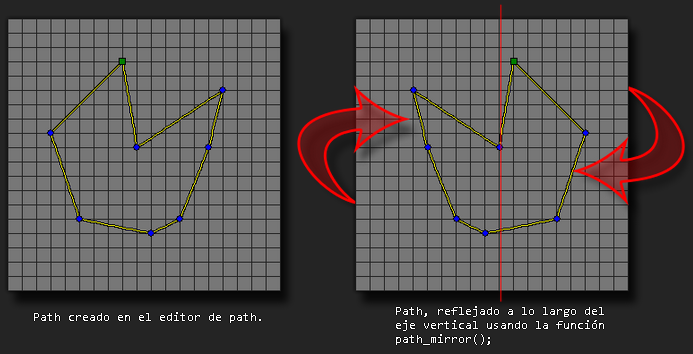

Refleja el path dado a lo largo de eje vertical, desde su centro.
Sintaxis
path_mirror(index);
Argumentos
| Argumento | Descripción |
|---|---|
| index | El índice del path a reflejar. |
Descripción
La función toma todos los puntos del path y los refleja por el centro a lo largo del eje vertical. Esta función cambia los datos del path que usan las instancias permanentemente desde que la función es utilizada hasta el final del juego.

Devuelve
Nada
Ejemplo
path_mirror(mypath);El código anterior refleja "mypath" a lo largo del eje vertical.